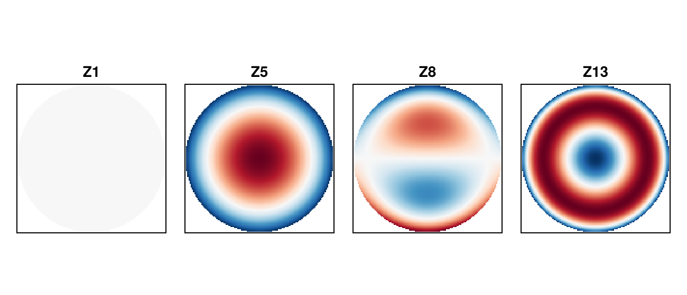
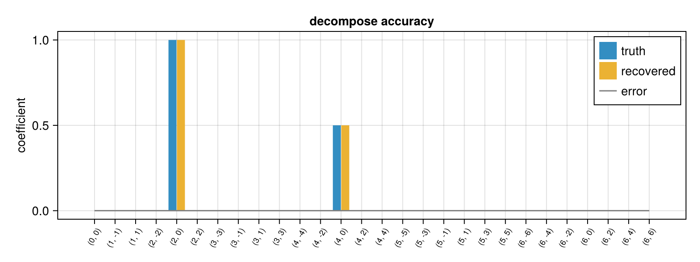
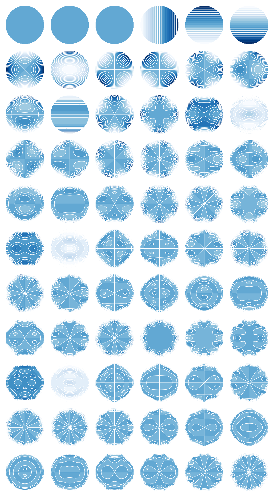

using PhaseBases
using CairoMakie
using PhaseBases: decompose ## disambiguate from Makie/GeometryBasics `decompose`
CairoMakie.activate!(; type="png")Zernike Bases
ZernikeBW stores Born & Wolf–normalized Zernike polynomials on a computational grid, together with the data needed to decompose an array into them.
1 — ZernikeBW: Dense Basis with Pseudo-Inverse
ZernikeBW stores every polynomial as a full 2D array and computes a pseudo-inverse for accurate decomposition (no orthogonality assumption).
zbas = ZernikeBW(128, 6)
length(zbas) ## 28 polynomials (orders 0–6)28Two constructor forms:
ZernikeBW(gridsize, maxorder)— unit circle on a square gridZernikeBW(dom, diameter, maxorder)— arbitraryCartesianDomain2D
Inspecting the structure
aperture(zbas) |> size ## (128, 128) binary mask
norms(zbas)[1:5] ## Born & Wolf norms (piston norm = √π ≈ 1.77)5-element Vector{Float64}:
112.44554237496477
56.17019079708265
56.17019079708265
45.89991823473829
64.79949042023154Elements are accessible by integer index or by (n, m):
zbas(4) ## ModalPhase for OSA j = 4 (defocus)
zbas(; n=3, m=1) ## ModalPhase for comaModal phase in ZernikeBW basis with coefficients [0.0, 0.0, 0.0, 0.0, 0.0, 0.0, 0.0, 0.0, 1.0, 0.0, 0.0, 0.0, 0.0, 0.0, 0.0, 0.0, 0.0, 0.0, 0.0, 0.0, 0.0, 0.0, 0.0, 0.0, 0.0, 0.0, 0.0, 0.0]
Visualizing individual polynomials
fig = Figure(; size=(650, 280))
for (i, j) in enumerate([1, 5, 8, 13])
ax = Axis(fig[1, i]; title="Z$j", aspect=DataAspect())
heatmap!(ax, (elements(zbas)[j] .* mask(zbas))'; colormap=:RdBu)
hidedecorations!(ax)
end
fig
2 — Index Conventions
For each of the Fringe, Noll, OSA and Mizer conventions there is a pair of functions converting between a single index j and the double index (n, m). The standalone functions work on plain integers.
fringe_j_to_nm(4) ## (n=2, m=0) — defocus in Fringe
noll_j_to_nm(4) ## (n=2, m=0) — same polynomial, Noll j=4 too
osa_j_to_nm(4) ## (n=2, m=0) — defocus in OSA as well(n = 2, m = 0)fringe_j_to_nm(5) ## (n=2, m=2)
noll_j_to_nm(5) ## (n=2, m=-2) — index 5 is a different polynomial in Noll!(n = 2, m = -2)Inverse direction:
nm_to_fringe_j(; n=3, m=-1) ## Fringe index for vertical coma
nm_to_osa_j(; n=3, m=-1) ## OSA index for the same polynomial
nm_to_noll_j(; n=3, m=-1) ## Noll index7Round-trip check:
all(nm_to_fringe_j(fringe_j_to_nm(j)) == j for j in 1:36)trueThe zerniketicks helper generates tick labels for Makie plots:
ticks = zerniketicks(zbas)
ticks[1][1:5] ## indices
ticks[2][1:5] ## "(n, m)" labels5-element Vector{String}:
"(0, 0)"
"(1, -1)"
"(1, 1)"
"(2, -2)"
"(2, 0)"3 — Compose and Decompose
Build a test wavefront from known coefficients with compose and recover them with decompose.
coef0 = zeros(length(zbas))
coef0[5] = 1.0; ## defocus (OSA j=4)
coef0[13] = 0.5; ## primary spherical (OSA j=12)
arr = compose(zbas, coef0)
coef_rec = decompose(arr, zbas)
maximum(abs, coef_rec .- coef0) ## ≈ 0
fig2 = Figure(; size=(800, 300))
ax = Axis(
fig2[1, 1];
ylabel="coefficient",
title="decompose accuracy",
xticks=zerniketicks(zbas), ## tick labels show the (n, m) indices
xticklabelrotation=π / 3,
xticklabelsize=9,
)
barplot!(ax, coef0; label="truth", n_dodge=2, dodge=1)
barplot!(ax, coef_rec; label="recovered", n_dodge=2, dodge=2)
lines!(ax, coef_rec .- coef0; label="error", color=:gray)
axislegend(ax; position=:rt)
fig2
4 — Algorithm and Derivatives
ZernikeBW is backed by the efficient recurrence published by Andersen (2018):
T. B. Andersen, "Efficient and robust recurrence relations for the Zernike circle polynomials and their derivatives in Cartesian coordinates," Opt. Express 26(15), 18878, Jul. 2018. https://doi.org/10.1364/OE.26.018878
The key advantage of this recurrence is that it computes the exact Cartesian partial derivatives $\partial Z_j/\partial x$ and $\partial Z_j/\partial y$ within the same loop as the polynomial values — no finite differences, no extra asymptotic cost.
Low-level API
The function zernike(x, y, maxord) evaluates all polynomials and their derivatives at a single point and returns a named tuple:
result = zernike(0.3, 0.4, 4)
# result.z — polynomial values for OSA indices 0 … 14 (stored at array positions 1 … 15)
# result.zx — ∂Z/∂x at (0.3, 0.4)
# result.zy — ∂Z/∂y at (0.3, 0.4)(z = [1.0, 0.4, 0.3, 0.24, -0.5, -0.07000000000000003, 0.043999999999999984, -0.5, -0.375, -0.117, -0.03360000000000001, -0.48, -0.125, 0.14000000000000007, -0.0527], zx = [0.0, 0.0, 1.0, 0.8, 1.2, 0.6, 0.72, 0.72, -0.7100000000000002, -0.2100000000000001, 0.17599999999999993, -1.024, -1.8, -1.3679999999999999, -0.468], zy = [0.0, 1.0, 0.0, 0.6, 1.6, -0.8, -0.2100000000000001, -0.2899999999999998, 0.72, -0.72, -0.468, -0.43200000000000005, -2.4, 1.3760000000000001, -0.17599999999999993])zernike returns the polynomials in OSA/ANSI order (within each radial order the sine terms come first, then the cosine terms), so array position k holds the polynomial with OSA index k - 1, the same as the elements of ZernikeBW. Use nm_to_noll_j, nm_to_fringe_j, etc. to translate to other conventions.
Derivative table
The following figure shows $\partial Z_j / \partial y$ for all 66 polynomials up to radial order 10, rendered as filled contour plots — one panel per
polynomial, laid out in a regular 6-column grid.
const NCOLS_DER = 6
const MAXORD_DER = 10
const NZ_DER = Int((MAXORD_DER + 2) * (MAXORD_DER + 1) / 2) ## 66
const NROWS_DER = cld(NZ_DER, NCOLS_DER) ## 11
const RES_DER = 128
# Evaluate ∂Z/∂y on a Cartesian grid; NaN outside the unit disk
xs_der = range(-1, 1; length=RES_DER)
zy_tab = [fill(NaN, RES_DER, RES_DER) for _ in 1:NZ_DER]
for (ci, xv) in enumerate(xs_der), (ri, yv) in enumerate(xs_der)
xv^2 + yv^2 > 1 && continue
vals = zernike(xv, yv, MAXORD_DER)
for j in 1:NZ_DER
zy_tab[j][ri, ci] = vals.zy[j] ## first index runs along y
end
end
# Draw the grid: one contourf panel per polynomial
cell_px_der = RES_DER
fig_der = Figure(; size=(NCOLS_DER * cell_px_der + 20, NROWS_DER * cell_px_der + 20))
for j in 1:NZ_DER
row = fld1(j, NCOLS_DER)
col = mod1(j, NCOLS_DER)
ax = Axis(fig_der[row, col]; aspect=DataAspect())
contourf!(ax, xs_der, xs_der, zy_tab[j]'; colormap=:Blues, levels=20)
contour!(ax, xs_der, xs_der, zy_tab[j]'; color=:white, levels=19)
hidedecorations!(ax)
hidespines!(ax)
end
resize_to_layout!(fig_der)
fig_der
5 — Summary
| Feature / function | Purpose |
|---|---|
ZernikeBW(N, order) | Dense Zernike basis, accurate pseudo-inverse |
elements(b), b[i] | Access basis functions |
norms(b), aperture(b), mask(b) | Basis metadata |
zbas(j), zbas(n=, m=) | Callable shortcut → ModalPhase |
fringe_j_to_nm, noll_j_to_nm, … | Index convention conversions |
zerniketicks(b) | Tick labels for plots |
decompose(arr, b) | Fit array to basis |
compose(b, coef) | Evaluate from coefficients |
zernike(x, y, n) | Low-level evaluation + exact Cartesian derivatives |
This page was generated using Literate.jl.